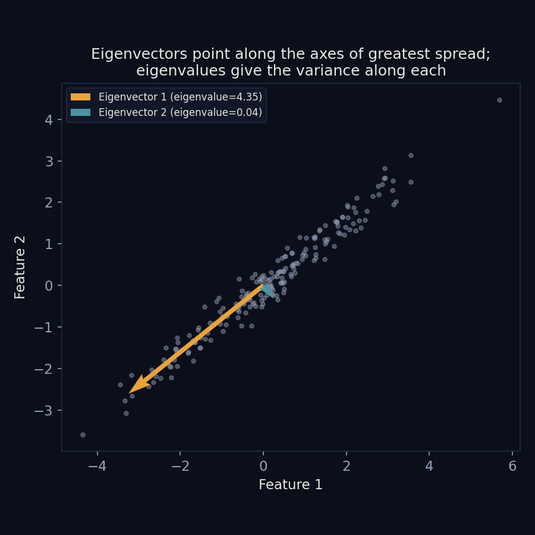
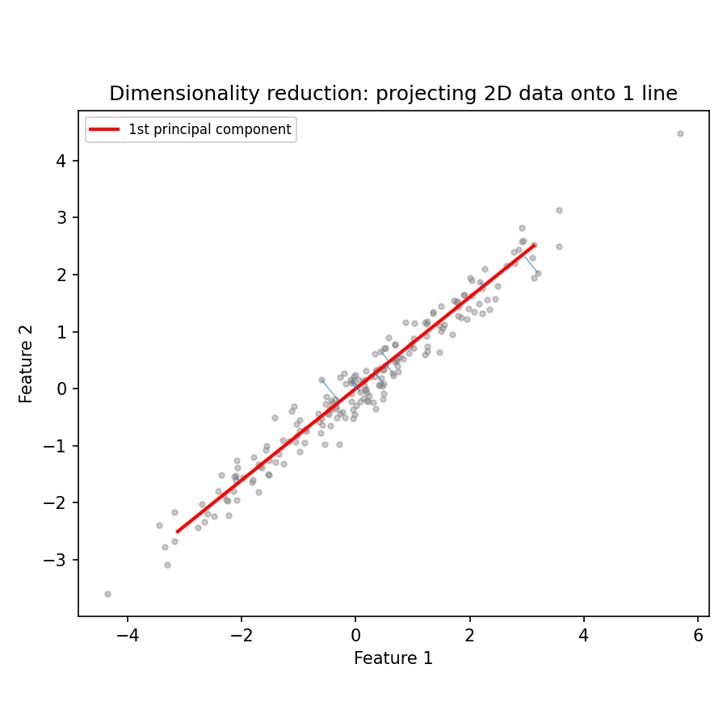
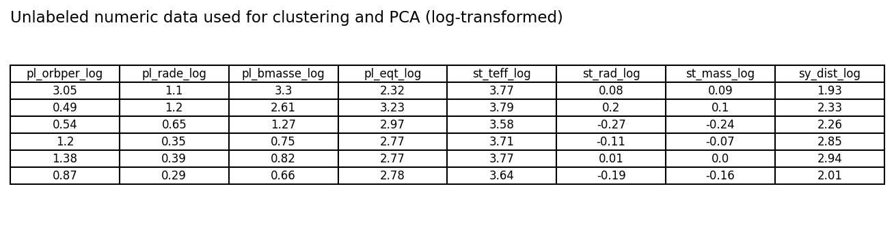
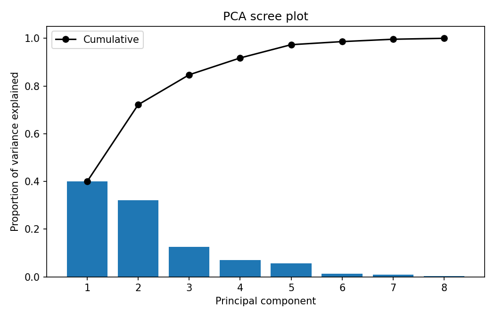
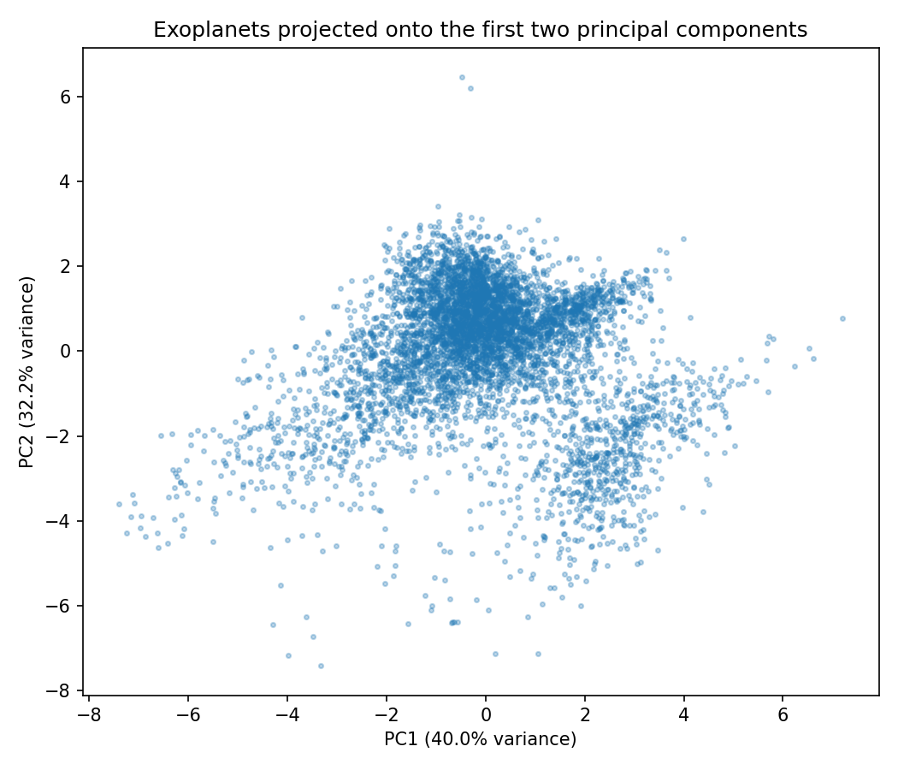
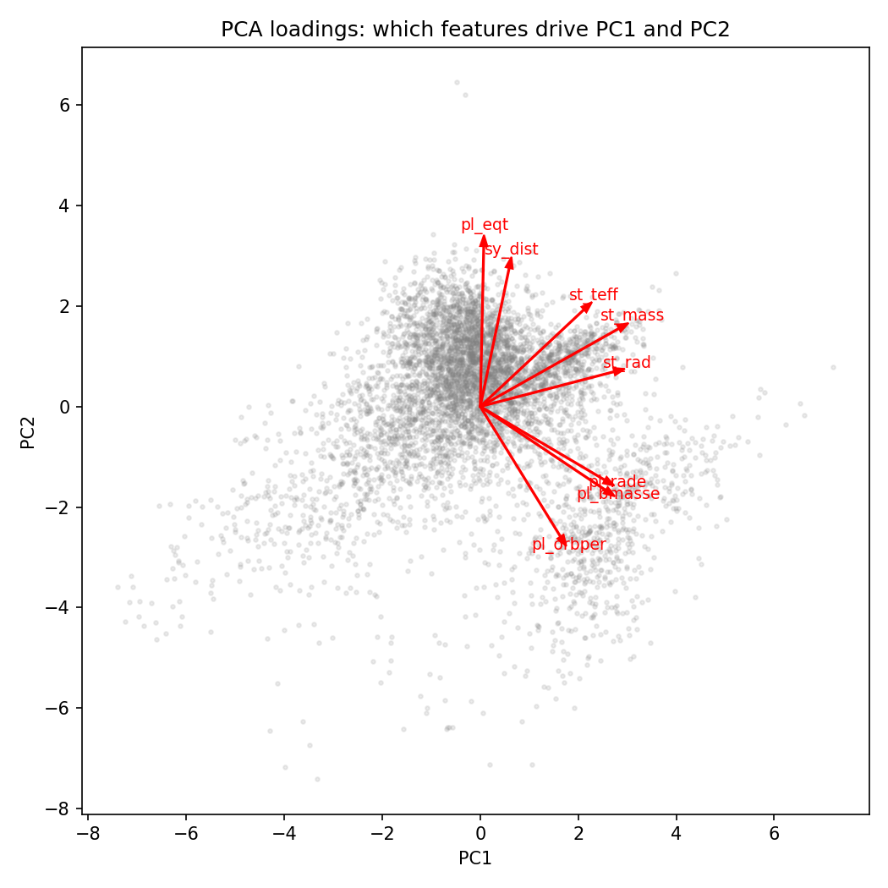

PCA
PCA
Overview
Principal Component Analysis (PCA) is a dimensionality reduction technique: it takes data described by many correlated numeric variables and re-expresses it using a smaller number of new variables, called principal components, that capture as much of the original variation as possible. Each principal component is a direction in the original feature space, found from the eigenvectors of the data's covariance matrix. The eigenvector points in the direction of a pattern of variation, and its paired eigenvalue measures how much of the data's total variance lies along that direction. The first principal component is the eigenvector with the largest eigenvalue, the direction along which the data spreads out the most; each following component captures the next largest share of remaining variance, at a right angle to all the ones before it.

High-dimensional data is difficult to explore directly: a dataset with eight numeric columns, as used here, cannot be plotted on a single chart, and many pairs of those columns are correlated with each other in ways that are hard to see from any one scatter plot alone. Reducing many correlated variables down to two or three principal components makes it possible to visualize the overall shape of the data, spot outliers, and see which original variables move together, all without inspecting every pairwise combination by hand.

Data Prep
PCA requires numeric data on a common scale, the same requirement as clustering. The same eight log-transformed, standardized features and the same 5,676 complete rows used for clustering were used here as well, so the two analyses are directly comparable.

Full prepared data: exoplanets_clean.csv.
Code
PCA code: clustering_pca.py (Python, uses scikit-learn).
Results
The first two principal components together explain about 72% of the total variance in the eight original features, and the first three explain about 85%. Looking at which original features load most heavily onto each component gives the components physical meaning rather than leaving them as abstract numbers: PC1 loads positively on planet radius, planet mass, stellar radius, and stellar mass, reading roughly as an overall "how big is this planet and its star" axis. PC2 loads positively on equilibrium temperature and system distance but negatively on orbital period, reading roughly as a "how close-in and hot is this planet" axis.



Conclusions
PCA reinforces what clustering already suggested: the eight physical properties measured for each confirmed exoplanet are not independent of each other, planet size and mass move together, and orbital distance and temperature move together, which is exactly why two components can summarize 72% of eight columns' worth of information. But the projection onto PC1 and PC2 shows one continuous cloud of points rather than separated groups, the same conclusion clustering reached by a completely different method. Taken together, the two analyses point toward the same answer to the project's central question: the properties that would distinguish a potentially habitable planet from the rest of the population do not form a separate, easily isolated cluster, they sit along the same continuum as everything else, which is part of why only a small number of planets end up confidently labeled as habitability candidates at all.